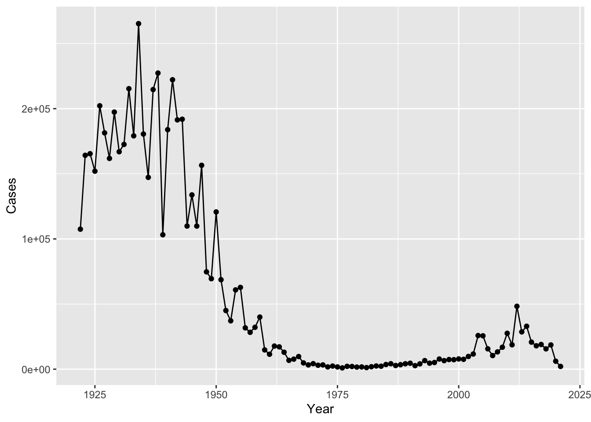
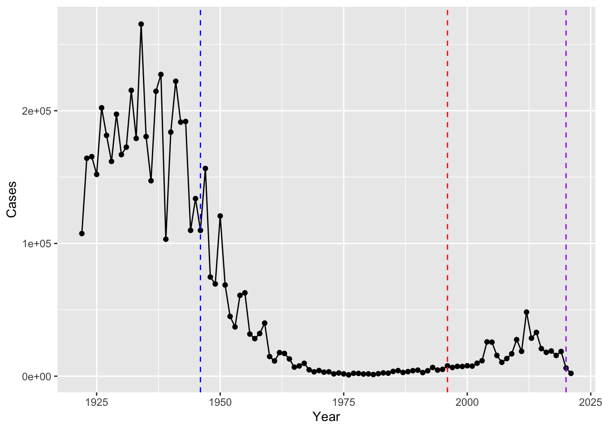
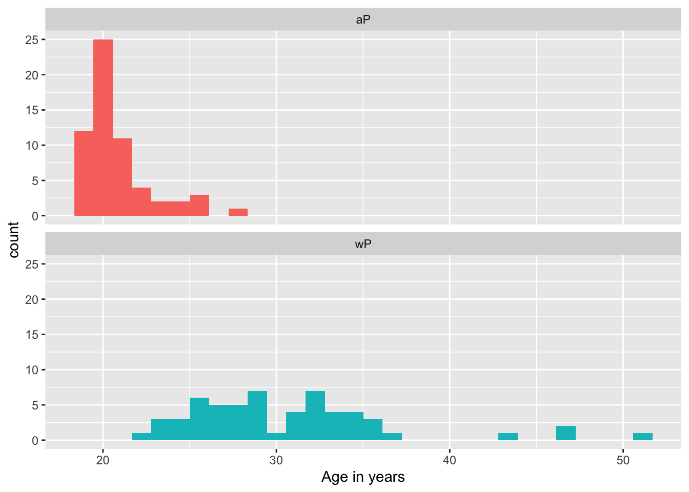
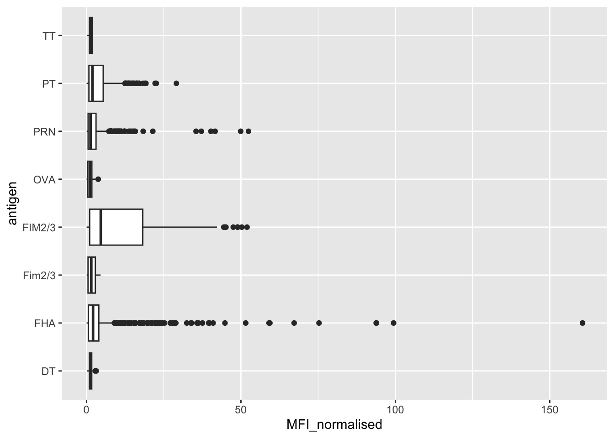
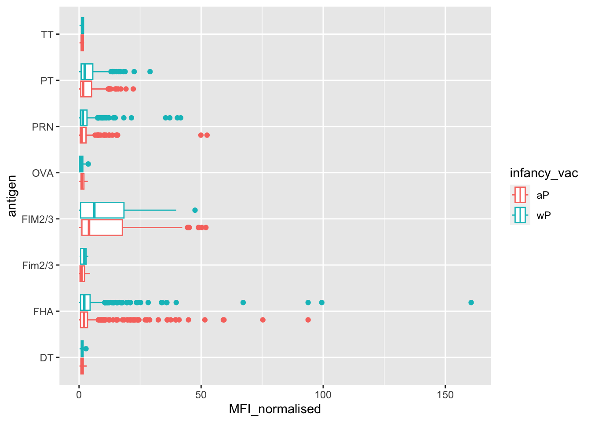
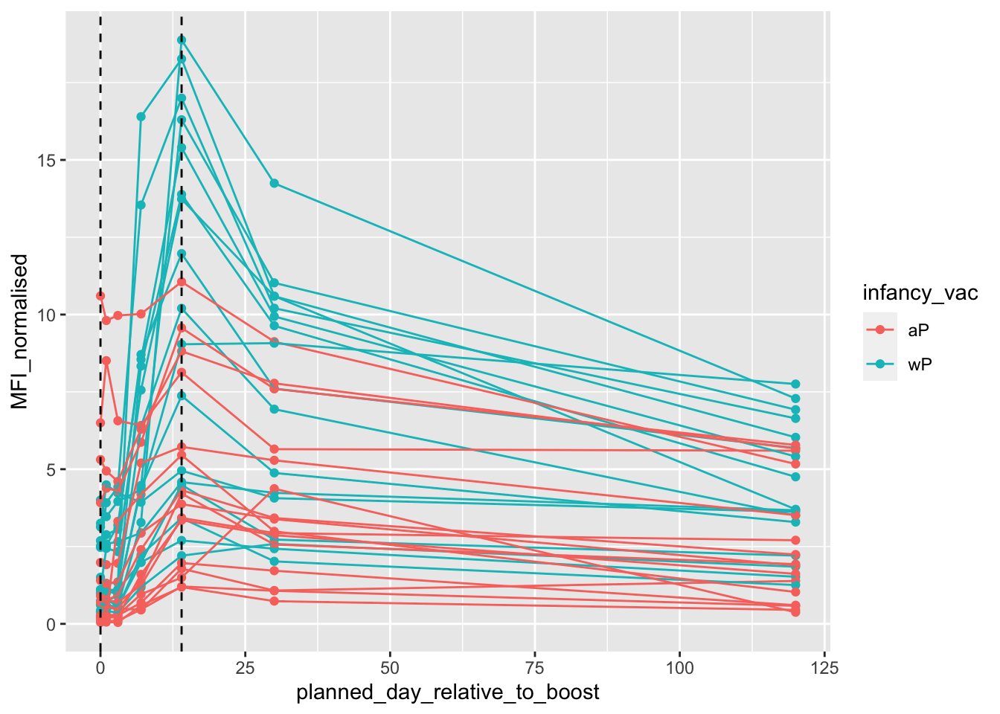

head(cdc) Year Cases
1 1922 107473
2 1923 164191
3 1924 165418
4 1925 152003
5 1926 202210
6 1927 181411Pertussis is a severe lung infection also known as whopping cough.
We will begin by investigating the number of Pertussis cases per year in the US.
This data is available on the CDC website here
Lets have a wee look at this data.frame
head(cdc) Year Cases
1 1922 107473
2 1923 164191
3 1924 165418
4 1925 152003
5 1926 202210
6 1927 181411Q1. With the help of the R “addin” package datapasta assign the CDC pertussis case number data to a data frame called cdc and use ggplot to make a plot of cases numbers over time.I want a nice plot of the number of cases per year.
library(ggplot2)
ggplot(cdc, aes(Year, Cases)) + geom_point() + geom_line()
Q2. Using the ggplot geom_vline() function add lines to your previous plot for the 1946 introduction of the wP vaccine and the 1996 switch to aP vaccine (see example in the hint below). What do you notice?
library(ggplot2)
ggplot(cdc, aes(Year, Cases)) +
geom_point() +
geom_line() +
geom_vline(xintercept=1946, linetype="dashed", col="blue") +
geom_vline(xintercept=1996, linetype="dashed", col="red") +
geom_vline(xintercept=2020, linetype="dashed", col="purple")
Q3. Describe what happened after the introduction of the aP vaccine? Do you have a possible explanation for the observed trend?
After the introduction of the aP vaccine, cases rose slightly and had a small peak in 2012. A possible explanation could be the anti-vax movement, bacterial immunity.
This is the goals of the CMI-PB project: http://www.cmi-pb.org/
The CBI-PB project makes its data avaiable via “API-endpoint” that returns JSON format
We will use the jsonlite package to access this data. The main function in this package is called read_json()
library(jsonlite)
subjects <- read_json("https://www.cmi-pb.org/api/subject", simplifyVector = TRUE)
specimen <- read_json("https://www.cmi-pb.org/api/specimen", simplifyVector = TRUE)
titer <- read_json("https://www.cmi-pb.org/api/v4/plasma_ab_titer", simplifyVector = TRUE)Have a wee peek at these new objects
head(subjects) subject_id infancy_vac biological_sex ethnicity race
1 1 wP Female Not Hispanic or Latino White
2 2 wP Female Not Hispanic or Latino White
3 3 wP Female Unknown White
4 4 wP Male Not Hispanic or Latino Asian
5 5 wP Male Not Hispanic or Latino Asian
6 6 wP Female Not Hispanic or Latino White
year_of_birth date_of_boost dataset
1 1986-01-01 2016-09-12 2020_dataset
2 1968-01-01 2019-01-28 2020_dataset
3 1983-01-01 2016-10-10 2020_dataset
4 1988-01-01 2016-08-29 2020_dataset
5 1991-01-01 2016-08-29 2020_dataset
6 1988-01-01 2016-10-10 2020_datasethead(specimen) specimen_id subject_id actual_day_relative_to_boost
1 1 1 -3
2 2 1 1
3 3 1 3
4 4 1 7
5 5 1 11
6 6 1 32
planned_day_relative_to_boost specimen_type visit
1 0 Blood 1
2 1 Blood 2
3 3 Blood 3
4 7 Blood 4
5 14 Blood 5
6 30 Blood 6head(titer) specimen_id isotype is_antigen_specific antigen MFI MFI_normalised
1 1 IgE FALSE Total 1110.21154 2.493425
2 1 IgE FALSE Total 2708.91616 2.493425
3 1 IgG TRUE PT 68.56614 3.736992
4 1 IgG TRUE PRN 332.12718 2.602350
5 1 IgG TRUE FHA 1887.12263 34.050956
6 1 IgE TRUE ACT 0.10000 1.000000
unit lower_limit_of_detection
1 UG/ML 2.096133
2 IU/ML 29.170000
3 IU/ML 0.530000
4 IU/ML 6.205949
5 IU/ML 4.679535
6 IU/ML 2.816431Q4. How many aP and wP infancy vaccinated subjects are in the dataset?
table(subjects$infancy_vac)
aP wP
60 58 Q5. How many Male and Female subjects/patients are in the dataset?
table(subjects$biological_sex)
Female Male
79 39 Q6. What is the breakdown of race and biological sex (e.g. number of Asian females, White males etc…)?
table(subjects$race, subjects$biological_sex)
Female Male
American Indian/Alaska Native 0 1
Asian 21 11
Black or African American 2 0
More Than One Race 9 2
Native Hawaiian or Other Pacific Islander 1 1
Unknown or Not Reported 11 4
White 35 20Dates can really suck to work with and do math. Lubricate package makes this easier. It is a part of the tidyverse that includes dplyr, ggplot2, etc.
library("tidyverse")── Attaching core tidyverse packages ──────────────────────── tidyverse 2.0.0 ──
✔ dplyr 1.1.4 ✔ readr 2.1.4
✔ forcats 1.0.0 ✔ stringr 1.5.1
✔ lubridate 1.9.3 ✔ tibble 3.2.1
✔ purrr 1.0.2 ✔ tidyr 1.3.0
── Conflicts ────────────────────────────────────────── tidyverse_conflicts() ──
✖ dplyr::filter() masks stats::filter()
✖ purrr::flatten() masks jsonlite::flatten()
✖ dplyr::lag() masks stats::lag()
ℹ Use the conflicted package (<http://conflicted.r-lib.org/>) to force all conflicts to become errorstime_length(today()-mdy("07-25-2002"), "years")[1] 21.36345Q7. Using this approach determine (i) the average age of wP individuals, (ii) the average age of aP individuals; and (iii) are they significantly different?
subjects$age <- ymd(subjects$date_of_boost) - ymd(subjects$year_of_birth)
subjects$age_years <- time_length(subjects$age, "years")
head(subjects) subject_id infancy_vac biological_sex ethnicity race
1 1 wP Female Not Hispanic or Latino White
2 2 wP Female Not Hispanic or Latino White
3 3 wP Female Unknown White
4 4 wP Male Not Hispanic or Latino Asian
5 5 wP Male Not Hispanic or Latino Asian
6 6 wP Female Not Hispanic or Latino White
year_of_birth date_of_boost dataset age age_years
1 1986-01-01 2016-09-12 2020_dataset 11212 days 30.69678
2 1968-01-01 2019-01-28 2020_dataset 18655 days 51.07461
3 1983-01-01 2016-10-10 2020_dataset 12336 days 33.77413
4 1988-01-01 2016-08-29 2020_dataset 10468 days 28.65982
5 1991-01-01 2016-08-29 2020_dataset 9372 days 25.65914
6 1988-01-01 2016-10-10 2020_dataset 10510 days 28.77481library(dplyr)
ap <- subjects %>%
filter(infancy_vac=="aP")
round(summary(time_length(ap$age, "years"))) Min. 1st Qu. Median Mean 3rd Qu. Max.
19 20 20 21 21 28 wp <- subjects %>%
filter(infancy_vac=="wP")
round(summary(time_length(wp$age, "years"))) Min. 1st Qu. Median Mean 3rd Qu. Max.
23 26 29 31 34 51 # Or use wilcox.test()
x <- t.test(time_length( wp$age, "years" ),
time_length( ap$age, "years" ))
x$p.value[1] 9.121472e-19It is significantly different.
Q8. Determine the age of all individuals at time of boost?
int <- ymd(subjects$date_of_boost) - ymd(subjects$year_of_birth)
age_at_boost <- time_length(int, "year")
head(age_at_boost)[1] 30.69678 51.07461 33.77413 28.65982 25.65914 28.77481library(dplyr)
ap <- subjects %>%
filter(infancy_vac=="aP")
round(summary(time_length(ap$age, "years"))) Min. 1st Qu. Median Mean 3rd Qu. Max.
19 20 20 21 21 28 wp <- subjects %>%
filter(infancy_vac=="wP")
round(summary(time_length(wp$age, "years"))) Min. 1st Qu. Median Mean 3rd Qu. Max.
23 26 29 31 34 51 Q9. With the help of a faceted boxplot or histogram (see below), do you think these two groups are significantly different?
ggplot(subjects) +
aes(age_years,
fill=as.factor(infancy_vac)) +
geom_histogram(show.legend=FALSE) +
facet_wrap(vars(infancy_vac), nrow=2) +
xlab("Age in years")`stat_bin()` using `bins = 30`. Pick better value with `binwidth`.
Merge or join tables
Link subjects and specimen using dplyr *_join() function
Q9. Complete the code to join specimen and subject tables to make a new merged data frame containing all specimen records along with their associated subject details:
meta <- inner_join(specimen, subjects)Joining with `by = join_by(subject_id)`head(meta) specimen_id subject_id actual_day_relative_to_boost
1 1 1 -3
2 2 1 1
3 3 1 3
4 4 1 7
5 5 1 11
6 6 1 32
planned_day_relative_to_boost specimen_type visit infancy_vac biological_sex
1 0 Blood 1 wP Female
2 1 Blood 2 wP Female
3 3 Blood 3 wP Female
4 7 Blood 4 wP Female
5 14 Blood 5 wP Female
6 30 Blood 6 wP Female
ethnicity race year_of_birth date_of_boost dataset
1 Not Hispanic or Latino White 1986-01-01 2016-09-12 2020_dataset
2 Not Hispanic or Latino White 1986-01-01 2016-09-12 2020_dataset
3 Not Hispanic or Latino White 1986-01-01 2016-09-12 2020_dataset
4 Not Hispanic or Latino White 1986-01-01 2016-09-12 2020_dataset
5 Not Hispanic or Latino White 1986-01-01 2016-09-12 2020_dataset
6 Not Hispanic or Latino White 1986-01-01 2016-09-12 2020_dataset
age age_years
1 11212 days 30.69678
2 11212 days 30.69678
3 11212 days 30.69678
4 11212 days 30.69678
5 11212 days 30.69678
6 11212 days 30.69678Antibody measurements in the blood
Q10. Now using the same procedure join meta with titer data so we can further analyze this data in terms of time of visit aP/wP, male/female etc.
abdata <- inner_join(titer, meta)Joining with `by = join_by(specimen_id)`head(abdata) specimen_id isotype is_antigen_specific antigen MFI MFI_normalised
1 1 IgE FALSE Total 1110.21154 2.493425
2 1 IgE FALSE Total 2708.91616 2.493425
3 1 IgG TRUE PT 68.56614 3.736992
4 1 IgG TRUE PRN 332.12718 2.602350
5 1 IgG TRUE FHA 1887.12263 34.050956
6 1 IgE TRUE ACT 0.10000 1.000000
unit lower_limit_of_detection subject_id actual_day_relative_to_boost
1 UG/ML 2.096133 1 -3
2 IU/ML 29.170000 1 -3
3 IU/ML 0.530000 1 -3
4 IU/ML 6.205949 1 -3
5 IU/ML 4.679535 1 -3
6 IU/ML 2.816431 1 -3
planned_day_relative_to_boost specimen_type visit infancy_vac biological_sex
1 0 Blood 1 wP Female
2 0 Blood 1 wP Female
3 0 Blood 1 wP Female
4 0 Blood 1 wP Female
5 0 Blood 1 wP Female
6 0 Blood 1 wP Female
ethnicity race year_of_birth date_of_boost dataset
1 Not Hispanic or Latino White 1986-01-01 2016-09-12 2020_dataset
2 Not Hispanic or Latino White 1986-01-01 2016-09-12 2020_dataset
3 Not Hispanic or Latino White 1986-01-01 2016-09-12 2020_dataset
4 Not Hispanic or Latino White 1986-01-01 2016-09-12 2020_dataset
5 Not Hispanic or Latino White 1986-01-01 2016-09-12 2020_dataset
6 Not Hispanic or Latino White 1986-01-01 2016-09-12 2020_dataset
age age_years
1 11212 days 30.69678
2 11212 days 30.69678
3 11212 days 30.69678
4 11212 days 30.69678
5 11212 days 30.69678
6 11212 days 30.69678How many isotypes are we measuring for all these individuals?
Q11. How many specimens (i.e. entries in abdata) do we have for each isotype?
table(abdata$isotype)
IgE IgG IgG1 IgG2 IgG3 IgG4
6698 3240 7968 7968 7968 7968 Q12. What are the different $dataset values in abdata and what do you notice about the number of rows for the most “recent” dataset?
table(abdata$dataset)
2020_dataset 2021_dataset 2022_dataset
31520 8085 2205 Lets focus on one of these IgG
igg <- abdata %>% filter(isotype=="IgG")
head(igg) specimen_id isotype is_antigen_specific antigen MFI MFI_normalised
1 1 IgG TRUE PT 68.56614 3.736992
2 1 IgG TRUE PRN 332.12718 2.602350
3 1 IgG TRUE FHA 1887.12263 34.050956
4 19 IgG TRUE PT 20.11607 1.096366
5 19 IgG TRUE PRN 976.67419 7.652635
6 19 IgG TRUE FHA 60.76626 1.096457
unit lower_limit_of_detection subject_id actual_day_relative_to_boost
1 IU/ML 0.530000 1 -3
2 IU/ML 6.205949 1 -3
3 IU/ML 4.679535 1 -3
4 IU/ML 0.530000 3 -3
5 IU/ML 6.205949 3 -3
6 IU/ML 4.679535 3 -3
planned_day_relative_to_boost specimen_type visit infancy_vac biological_sex
1 0 Blood 1 wP Female
2 0 Blood 1 wP Female
3 0 Blood 1 wP Female
4 0 Blood 1 wP Female
5 0 Blood 1 wP Female
6 0 Blood 1 wP Female
ethnicity race year_of_birth date_of_boost dataset
1 Not Hispanic or Latino White 1986-01-01 2016-09-12 2020_dataset
2 Not Hispanic or Latino White 1986-01-01 2016-09-12 2020_dataset
3 Not Hispanic or Latino White 1986-01-01 2016-09-12 2020_dataset
4 Unknown White 1983-01-01 2016-10-10 2020_dataset
5 Unknown White 1983-01-01 2016-10-10 2020_dataset
6 Unknown White 1983-01-01 2016-10-10 2020_dataset
age age_years
1 11212 days 30.69678
2 11212 days 30.69678
3 11212 days 30.69678
4 12336 days 33.77413
5 12336 days 33.77413
6 12336 days 33.77413Boxplot of MFI _normalized vs antigen
ggplot(igg, aes(MFI_normalised, antigen)) + geom_boxplot()
ggplot(igg, aes(MFI_normalised, antigen, col=infancy_vac)) + geom_boxplot()
Focus in on IgG to the Pertussis Toxin (PT) antigen in teh 2021 dataset
igg.pt <- igg %>% filter(antigen=="PT", dataset=="2021_dataset")ggplot(igg.pt, aes(planned_day_relative_to_boost, MFI_normalised, col=infancy_vac, group=subject_id)) +
geom_point() +
geom_line() +
geom_vline(xintercept=0, linetype="dashed", col="black") +
geom_vline(xintercept=14, linetype="dashed", col="black")
Q18. Does this trend look similar for the 2020 dataset?
14 days for it to peak. wP higher than aP?